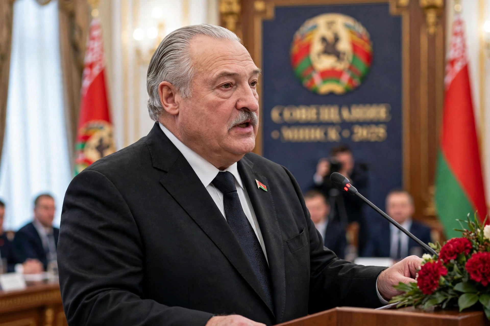

Alexander Grigoryevich Lukashenko (born 30 August 1954) is a Belarusian politician who has served as President of Belarus since 1994, the only person to hold the office since its creation.

Lukashenko was born in Kopys in the Vitebsk Region, grew up in Alexandria, studied history at Mogilev Pedagogical Institute and agricultural economics, served in the Soviet Border Troops and army, and managed a collective farm.
Elected in 1994 on an anti-corruption platform, he consolidated power through referendums in 1995 and 1996, retained much state control of the economy, and maintained close ties with Russia, including the Union State.
Western governments and observers have criticised elections as not free or fair, and human-rights abuses, especially after mass protests following the 2020 election and the crackdown that followed, and Belarus's support for Russia after 2022. He is often described in Western media as Europe's last dictator, a label he has at times embraced ironically.
He is married to Galina, has sons Viktor, Dmitry and Nikolai, and is known for ice hockey and farming imagery.